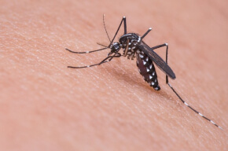

PROTECTIVE ADVANCED COMPLEX
Természetes módja a szervezet parazitáktól való megtisztításának
- Segít eltávolítani a parazitákat és toxinjaikat
- Ellenáll
az újrafertőződésnek - Segít erősíteni az immunrendszert


Csak ma
Vigyázzon!
Mindenhol paraziták
vannak!
-
Rosszul átsütött hús és hal
-

Rosszul mosott gyümölcsök és zöldségek
-

Házi- és haszonállatok
-
 Rovarcsípések
-

Közterületek és közlekedési járművek
-

Gyorskaják, vendéglátás, utcai ételek
-
Szennyezett víz vagy talaj
-

Kapcsolat fertőzött emberekkel
A paraziták súlyos
szövődményeket okozhatnak!
- Amíg a paraziták bent vannak, addig:
- Csökkentik az immunitást
- Allergiát okoznak
- Negatívan hatnak az
idegrendszerre - Felszívják a vitaminokat
- Serkentik a daganatok kialakulását
- A lárvák és a peték aktívan fejlődnek:
- A paraziták naponta akár 245 000 tojást is leraknak
- Akár 40 cm-re is megnőhetnek
- Behatolnak a
szervek belsejébe és elpusztítják
azokat - Naponta mérgezi a szervezetet mérgekkel és
toxinokkal
- A szövődmények 49%-át helminták okozzák.
- Érinthetik az agyat, myiasist okozva
- Elősegítik a rüh, dermatitisz, trombiculosis kialakulását
- Súlyos látáskárosodást okozhatnak
- Aktiválják a szívbetegségeket, növelik a stroke kockázatát
A Vormixil egy
komplex hatású parazitaellenes
készítmény
Segít elpusztítani
a legtöbb parazita típust
Segít csökkenteni
a parazitafertőzések okozta intoxikációt
Segít javítani
a gyomor-bélrendszer működését és stabilizálja az étvágyat
Csökkenti
az újrafertőződést
Lehetővé teszi
a sérült bélnyálkahártya helyreállítását
Támogatja
az immunrendszer erősítését